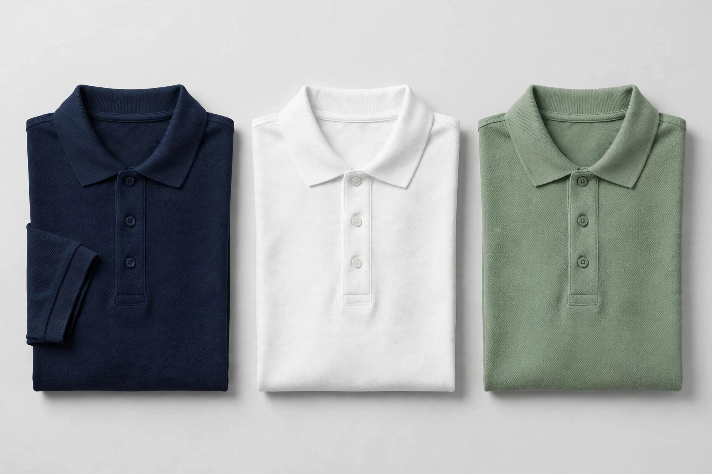

A polo shirt looks like the easiest garment in the catalogue. A collar, three buttons, short sleeves, done. That is what most buyers think when they send their first polo enquiry, and it is also why so many first polo orders come back with a problem nobody expected. As a custom polo shirt manufacturer in Sialkot, Pakistan, we see both kinds of order every week, and the decisions that matter are different for each. In one week recently we had two polo orders on the cutting table at once: sixty embroidered staff shirts for a company, and a first drop for a small fashion label. Same garment on paper.

The company buyer is ordering a uniform, even if nobody calls it that. Sixty people have to look like one team, in the same navy, with the same logo in the same place, and the shirts have to survive a working week, a hot wash, and a reorder six months later that matches the first batch exactly. A collar that curls after ten washes is sixty people walking around in a shirt that looks tired.
The fashion buyer is ordering something else entirely. Their polo has to earn its place on a rail next to ten other brands, so hand feel, fit and colour do the selling before anyone reads the label. They care about the drape, the exact shade of sage or stone, and whether the shirt looks like a brand or a trade-show giveaway. The logo is usually smaller and quieter, sometimes tonal, because the shirt itself is the statement.
Here is the part most first-time buyers miss: the factory can make both polos, but it has to know which one you want before the fabric is cut. Tell us who wears it and where, in your first message, and half the decisions below answer themselves.
Ask a buyer what they checked on their last polo order and they will usually talk about the fabric. Ask us, and we will talk about the collar, because the collar is the first thing that fails and the first thing anyone notices.
There are two ways to build a polo collar. A ribbed knit collar is knitted separately and holds its shape well if the ribbing is dense enough. A self-fabric collar is cut from the same piqué as the body, which gives the softer, relaxed look a fashion label usually wants, but it needs a light interlining inside, or it flops open after a few washes. In our experience, the collar that causes trouble is almost always the one nobody tested. The buyer checked the colour and the logo and never folded the collar flat and left it overnight to see whether it sprang back.
Do that on your sample. Fold the collar down, the way it will be worn, leave it for a day, wash the sample once and fold it again. If the points curl, say so before the bulk order. A collar fault found on one sample is a five-minute conversation; found on sixty shirts, it is a remake. The same applies to the cuffs. Ribbed cuffs should grip the arm gently and spring back when you pull them. Buttons matter too. A good button is sewn on with a shank, a little thread stem that lets it sit properly in the buttonhole, and matched to the shirt.
The classic polo is piqué knit cotton, the little waffle texture you can feel with your thumb. It breathes, it holds its shape, and it is the right choice for most company shirts and most fashion polos. The weight is the decision. Around 180 to 200 GSM feels light and easy, the kind of polo people reach for on a warm day. Around 220 to 240 GSM feels substantial, holds the collar better, and reads as premium, but it is a heavier shirt in summer.
Cotton-poly piqué is the practical middle ground, and for a staff uniform it is often the smarter buy. The polyester keeps the colour truer through repeated washing, dries faster and wrinkles less, which matters when sixty shirts are laundered sixty different ways. Pure cotton feels better against the skin and takes dye with a softer, richer depth, so a fashion label chasing a particular shade usually stays with cotton.
Then there is dri-fit, the performance fabric, and this is where the enquiries we get now are heading. A dri-fit polo looks like a normal piqué polo from a distance, but it is knitted from polyester microfibre that pulls sweat off the skin instead of soaking it up. Golf clubs and outdoor teams ask for it by name now, because a cotton polo goes heavy and damp by midday and a dri-fit polo does not. The trade-off: dri-fit does not have cotton's soft hand feel, and embroidery needs a different stabiliser on it, or the logo puckers. If your team works outdoors or plays sport in the shirt, dri-fit earns its place. For an office or a shop floor, piqué cotton will feel better and look better for longer.
I check a polo sample the way I check every sample in this factory, with my hands before my eyes. I fold the collar flat and let go, and watch whether it comes back to where it started. I pull the placket gently, just enough to feel whether the stitching holds or gives. I button the top button and look at the placket from the side. A placket that bows outwards will only bow more after washing. Then I turn the shirt inside out. A clean inside, with the seams finished properly and no loose threads, usually means the outside will last. It takes about four minutes, and I have caught more problems in those four minutes than in any report. The polo that passes them is the polo the customer comes back for.
Company polos are usually embroidered, and there is a good reason. An embroidered chest logo survives the wash, the iron and the working week in a way print never quite does. The logo sits on the left chest, and the size matters more than most buyers think. A logo wider than about ten centimetres stiffens the chest, and a dense logo puckers the piqué around it. The fix is a proper stabiliser behind the embroidery and a stitch count matched to the fabric.
Print suits the fashion polo better. A small chest print, a tonal print, a print on the back below the collar, all of these read as a brand choice rather than a uniform, and a soft water-based print keeps the hand feel of the shirt. What does not work is a heavy plastisol print across the chest. It sits on top of the texture, cracks at the fold, and feels like a sticker. If you want print, ask for a sample print on the actual fabric, not a digital mockup. Send the artwork in a proper file, because a logo pulled from a website header will embroider as a blur.
A company ordered eighty polos for its field team, one style for everyone, in a dark navy piqué. The sample looked fine on the hanger. What nobody had asked for was side vents, and the sample had none. On the hanger it made no difference. On a person it did. The first time a member of staff bent down or reached up, the straight hem pulled tight and rode up at the back, and the shirt looked a size too small even though the size was right. The team wore them for a week and asked for a fix.
We remade the order with a short side vent on each side and a back hem cut a couple of centimetres longer than the front, and the same shirt suddenly fit the way it was supposed to. The lesson cost one order. A polo is a shirt people move in, so if your team bends, reaches, sits and stands in it all day, the vents are part of the fit, not decoration. Ask for them on the sample.
Polos sit across our uniforms and fashion lines, so a first order starts at 20 pieces per style for company and uniform orders, with sizes and colours mixed inside that number. Fashion and brand orders start in the same low range, 15–50 pieces per style, small enough to test a design without betting the season on it. Split the order by real bodies, not by even numbers, and ask for the size breakdown in writing on the order confirmation. A ladies' cut is worth ordering separately, because a unisex polo sized down is not the same thing. Send your design, a tech file if you have one, or a photograph of the polo you wear now, and we quote exactly for that piece once we have seen it. The sample is usually in your hands within 7–10 working days, and we share photographs for your approval before anything goes into bulk. Your own brand label and size tags go in as standard, with a "Made in [your country]" tag on request. Every run is checked twice, in line and again before packing, and you receive final quality-check photographs before dispatch. For a small order, one piece from the run can be sent to you for checking while the rest continues. Plan backwards from the day you need the shirts, allowing shipping time to North America or Europe by air or by sea. See the full range on our uniforms & workwear page and our streetwear & outerwear page.
The fastest quotes we send are the ones where the first message already answers the questions we would have asked. A photograph of the polo you wear now tells us more in one glance than a long description. Add the quantity per style, the colours, the sizes, and whether the logo should be embroidered or printed. If you know the fabric you want, say so. If you do not, tell us who wears it and where. As a custom polo shirt manufacturer in Sialkot, Pakistan, we will recommend the fabric, the collar and the logo treatment to match. Send all of that on WhatsApp at +92-339-5099397 or by email at safettech@outlook.com, and we will reply with an exact quote for that piece and a sampling plan. Or use our contact page to request a sample.
A polo is the shirt your customer wears to work, to the golf course and to a family lunch, and it has to look right in all three places. Send me the polo you wear now and tell me who it is for, and I will tell you honestly what it needs to do the job properly.
Ahmed Zahid
Founder & Director, Safe-T TECH International · Sialkot, Pakistan
Send your design today — samples in 7–10 days, trial orders from just 20 pieces per style.